The original, as published: Tony R. Kuphaldt, Lessons In Electric Circuits, Transformers. CC BY 4.0, https://creativecommons.org/licenses/by/4.0/. Imported as published, from https://www.ibiblio.org/kuphaldt/electricCircuits/AC/AC_9.html https://www.ibiblio.org/kuphaldt/electricCircuits/AC/AC_9.html
So far, we've observed simulations of transformers where the primary and secondary windings were of identical inductance, giving approximately equal voltage and current levels in both circuits. Equality of voltage and current between the primary and secondary sides of a transformer, however, is not the norm for all transformers. If the inductances of the two windings are not equal, something interesting happens:
transformer v1 1 0 ac 10 sin rbogus1 1 2 1e-12 rbogus2 5 0 9e12 l1 2 0 10000 l2 3 5 100 k l1 l2 0.999 vi1 3 4 ac 0 rload 4 5 1k .ac lin 1 60 60 .print ac v(2,0) i(v1) .print ac v(3,5) i(vi1) .end
freq v(2) i(v1) 6.000E+01 1.000E+01 9.975E-05 Primary winding freq v(3,5) i(vi1) 6.000E+01 9.962E-01 9.962E-04 Secondary winding
Notice how the secondary voltage is approximately ten times less than the primary voltage (0.9962 volts compared to 10 volts), while the secondary current is approximately ten times greater (0.9962 mA compared to 0.09975 mA). What we have here is a device that steps voltage down by a factor of ten and current up by a factor of ten: (Figure below)
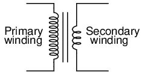
Turns ratio of 10:1 yields 10:1 primary:secondary voltage ratio and 1:10 primary:secondary current ratio.
This is a very useful device, indeed. With it, we can easily multiply or divide voltage and current in AC circuits. Indeed, the transformer has made long-distance transmission of electric power a practical reality, as AC voltage can be “stepped up” and current “stepped down” for reduced wire resistance power losses along power lines connecting generating stations with loads. At either end (both the generator and at the loads), voltage levels are reduced by transformers for safer operation and less expensive equipment. A transformer that increases voltage from primary to secondary (more secondary winding turns than primary winding turns) is called a step-up transformer. Conversely, a transformer designed to do just the opposite is called a step-down transformer.
Let's re-examine a photograph shown in the previous section: (Figure below)
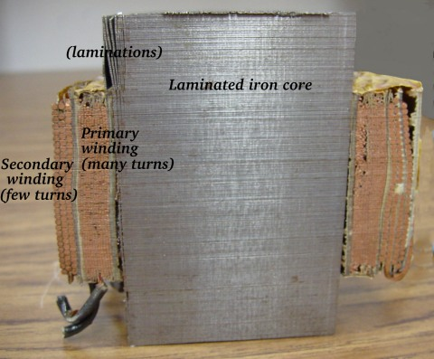
Transformer cross-section showing primary and secondary windings is a few inches tall (approximately 10 cm).
This is a step-down transformer, as evidenced by the high turn count of the primary winding and the low turn count of the secondary. As a step-down unit, this transformer converts high-voltage, low-current power into low-voltage, high-current power. The larger-gauge wire used in the secondary winding is necessary due to the increase in current. The primary winding, which doesn't have to conduct as much current, may be made of smaller-gauge wire.
In case you were wondering, it is possible to operate either of these transformer types backwards (powering the secondary winding with an AC source and letting the primary winding power a load) to perform the opposite function: a step-up can function as a step-down and visa-versa. However, as we saw in the first section of this chapter, efficient operation of a transformer requires that the individual winding inductances be engineered for specific operating ranges of voltage and current, so if a transformer is to be used “backwards” like this it must be employed within the original design parameters of voltage and current for each winding, lest it prove to be inefficient (or lest it be damaged by excessive voltage or current!).
Transformers are often constructed in such a way that it is not obvious which wires lead to the primary winding and which lead to the secondary. One convention used in the electric power industry to help alleviate confusion is the use of “H” designations for the higher-voltage winding (the primary winding in a step-down unit; the secondary winding in a step-up) and “X” designations for the lower-voltage winding. Therefore, a simple power transformer will have wires labeled “H1”, “H2”, “X1”, and “X2”. There is usually significance to the numbering of the wires (H1 versus H2, etc.), which we'll explore a little later in this chapter.
The fact that voltage and current get “stepped” in opposite directions (one up, the other down) makes perfect sense when you recall that power is equal to voltage times current, and realize that transformers cannot produce power, only convert it. Any device that could output more power than it took in would violate the Law of Energy Conservation in physics, namely that energy cannot be created or destroyed, only converted. As with the first transformer example we looked at, power transfer efficiency is very good from the primary to the secondary sides of the device.
The practical significance of this is made more apparent when an alternative is considered: before the advent of efficient transformers, voltage/current level conversion could only be achieved through the use of motor/generator sets. A drawing of a motor/generator set reveals the basic principle involved: (Figure below)
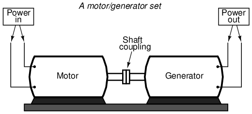
Motor generator illustrates the basic principle of the transformer.
In such a machine, a motor is mechanically coupled to a generator, the generator designed to produce the desired levels of voltage and current at the rotating speed of the motor. While both motors and generators are fairly efficient devices, the use of both in this fashion compounds their inefficiencies so that the overall efficiency is in the range of 90% or less. Furthermore, because motor/generator sets obviously require moving parts, mechanical wear and balance are factors influencing both service life and performance. Transformers, on the other hand, are able to convert levels of AC voltage and current at very high efficiencies with no moving parts, making possible the widespread distribution and use of electric power we take for granted.
In all fairness it should be noted that motor/generator sets have not necessarily been obsoleted by transformers for all applications. While transformers are clearly superior over motor/generator sets for AC voltage and current level conversion, they cannot convert one frequency of AC power to another, or (by themselves) convert DC to AC or visa-versa. Motor/generator sets can do all these things with relative simplicity, albeit with the limitations of efficiency and mechanical factors already described. Motor/generator sets also have the unique property of kinetic energy storage: that is, if the motor's power supply is momentarily interrupted for any reason, its angular momentum (the inertia of that rotating mass) will maintain rotation of the generator for a short duration, thus isolating any loads powered by the generator from “glitches” in the main power system.
Looking closely at the numbers in the SPICE analysis, we should see a correspondence between the transformer's ratio and the two inductances. Notice how the primary inductor (l1) has 100 times more inductance than the secondary inductor (10000 H versus 100 H), and that the measured voltage step-down ratio was 10 to 1. The winding with more inductance will have higher voltage and less current than the other. Since the two inductors are wound around the same core material in the transformer (for the most efficient magnetic coupling between the two), the parameters affecting inductance for the two coils are equal except for the number of turns in each coil. If we take another look at our inductance formula, we see that inductance is proportional to the square of the number of coil turns:
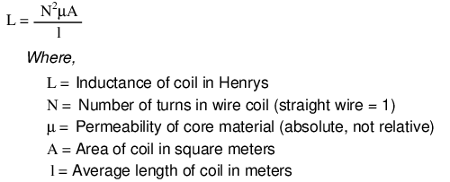
So, it should be apparent that our two inductors in the last SPICE transformer example circuit -- with inductance ratios of 100:1 -- should have coil turn ratios of 10:1, because 10 squared equals 100. This works out to be the same ratio we found between primary and secondary voltages and currents (10:1), so we can say as a rule that the voltage and current transformation ratio is equal to the ratio of winding turns between primary and secondary.
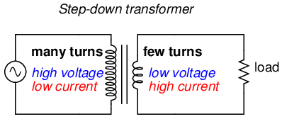
Step-down transformer: (many turns :few turns).
The step-up/step-down effect of coil turn ratios in a transformer (Figure above) is analogous to gear tooth ratios in mechanical gear systems, transforming values of speed and torque in much the same way: (Figure below)
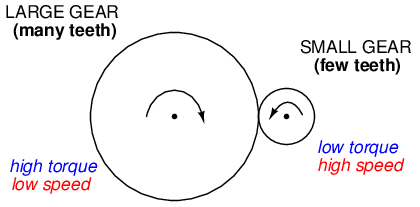
Torque reducing gear train steps torque down, while stepping speed up.
Step-up and step-down transformers for power distribution purposes can be gigantic in proportion to the power transformers previously shown, some units standing as tall as a home. The following photograph shows a substation transformer standing about twelve feet tall: (Figure below)
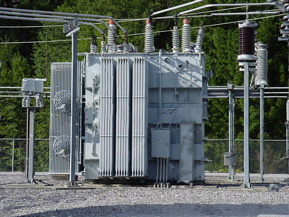
Substation transformer.
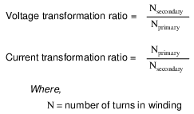
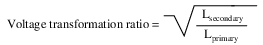
Aside from the ability to easily convert between different levels of voltage and current in AC and DC circuits, transformers also provide an extremely useful feature called isolation, which is the ability to couple one circuit to another without the use of direct wire connections. We can demonstrate an application of this effect with another SPICE simulation: this time showing “ground” connections for the two circuits, imposing a high DC voltage between one circuit and ground through the use of an additional voltage source:(Figure below)
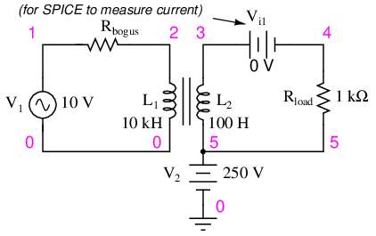
Transformer isolates 10 Vac at V1 from 250 VDC at V2.
v1 1 0 ac 10 sin rbogus1 1 2 1e-12 v2 5 0 dc 250 l1 2 0 10000 l2 3 5 100 k l1 l2 0.999 vi1 3 4 ac 0 rload 4 5 1k .ac lin 1 60 60 .print ac v(2,0) i(v1) .print ac v(3,5) i(vi1) .end
DC voltages referenced to ground (node 0): (1) 0.0000 (2) 0.0000 (3) 250.0000 (4) 250.0000 (5) 250.0000 AC voltages: freq v(2) i(v1) 6.000E+01 1.000E+01 9.975E-05 Primary winding freq v(3,5) i(1) 6.000E+01 9.962E-01 9.962E-04 Secondary winding
SPICE shows the 250 volts DC being impressed upon the secondary circuit elements with respect to ground, (Figure above) but as you can see there is no effect on the primary circuit (zero DC voltage) at nodes 1 and 2, and the transformation of AC power from primary to secondary circuits remains the same as before. The impressed voltage in this example is often called a common-mode voltage because it is seen at more than one point in the circuit with reference to the common point of ground. The transformer isolates the common-mode voltage so that it is not impressed upon the primary circuit at all, but rather isolated to the secondary side. For the record, it does not matter that the common-mode voltage is DC, either. It could be AC, even at a different frequency, and the transformer would isolate it from the primary circuit all the same.
There are applications where electrical isolation is needed between two AC circuit without any transformation of voltage or current levels. In these instances, transformers called isolation transformers having 1:1 transformation ratios are used. A benchtop isolation transformer is shown in Figure below.
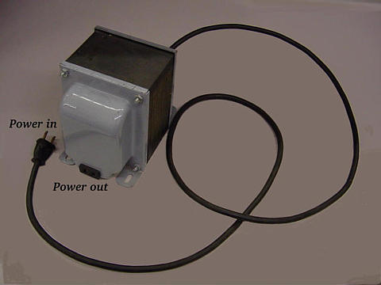
Isolation transformer isolates power out from the power line.
Since transformers are essentially AC devices, we need to be aware of the phase relationships between the primary and secondary circuits. Using our SPICE example from before, we can plot the waveshapes (Figure below) for the primary and secondary circuits and see the phase relations for ourselves:
spice transient analysis file for use with nutmeg: transformer v1 1 0 sin(0 15 60 0 0) rbogus1 1 2 1e-12 v2 5 0 dc 250 l1 2 0 10000 l2 3 5 100 k l1 l2 0.999 vi1 3 4 ac 0 rload 4 5 1k .tran 0.5m 17m .end nutmeg commands: setplot tran1 plot v(2) v(3,5)
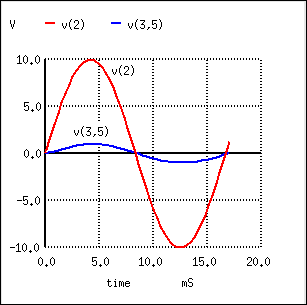
Secondary voltage V(3,5) is in-phase with primary voltage V(2), and stepped down by factor of ten.
In going from primary, V(2), to secondary, V(3,5), the voltage was stepped down by a factor of ten, (Figure above) , and the current was stepped up by a factor of 10. (Figure below) Both current (Figure below) and voltage (Figure above) waveforms are in-phase in going from primary to secondary.
nutmeg commands: setplot tran1 plot I(L1#branch) I(L2#branch)
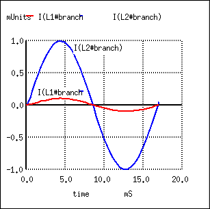
Primary and secondary currents are in-phase. Secondary current is stepped up by a factor of ten.
It would appear that both voltage and current for the two transformer windings are in-phase with each other, at least for our resistive load. This is simple enough, but it would be nice to know which way we should connect a transformer in order to ensure the proper phase relationships be kept. After all, a transformer is nothing more than a set of magnetically-linked inductors, and inductors don't usually come with polarity markings of any kind. If we were to look at an unmarked transformer, we would have no way of knowing which way to hook it up to a circuit to get in-phase (or 180o out-of-phase) voltage and current: (Figure below)
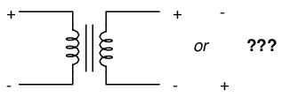
As a practical matter, the polarity of a transformer can be ambiguous.
Since this is a practical concern, transformer manufacturers have come up with a sort of polarity marking standard to denote phase relationships. It is called the dot convention, and is nothing more than a dot placed next to each corresponding leg of a transformer winding: (Figure below)
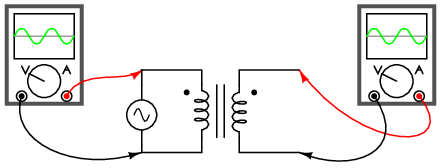
A pair of dots indicates like polarity.
Typically, the transformer will come with some kind of schematic diagram labeling the wire leads for primary and secondary windings. On the diagram will be a pair of dots similar to what is seen above. Sometimes dots will be omitted, but when “H” and “X” labels are used to label transformer winding wires, the subscript numbers are supposed to represent winding polarity. The “1” wires (H1 and X1) represent where the polarity-marking dots would normally be placed.
The similar placement of these dots next to the top ends of the primary and secondary windings tells us that whatever instantaneous voltage polarity seen across the primary winding will be the same as that across the secondary winding. In other words, the phase shift from primary to secondary will be zero degrees.
On the other hand, if the dots on each winding of the transformer do not match up, the phase shift will be 180o between primary and secondary, like this: (Figure below)
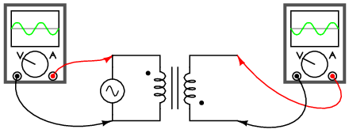
Out of phase: primary red to dot, secondary black to dot.
Of course, the dot convention only tells you which end of each winding is which, relative to the other winding(s). If you want to reverse the phase relationship yourself, all you have to do is swap the winding connections like this: (Figure below)
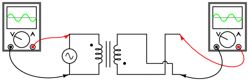
In phase: primary red to dot, secondary red to dot.
Transformers are very versatile devices. The basic concept of energy transfer between mutual inductors is useful enough between a single primary and single secondary coil, but transformers don't have to be made with just two sets of windings. Consider this transformer circuit: (Figure below)
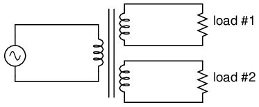
Transformer with multiple secondaries, provides multiple output voltages.
Here, three inductor coils share a common magnetic core, magnetically “coupling” or “linking” them together. The relationship of winding turn ratios and voltage ratios seen with a single pair of mutual inductors still holds true here for multiple pairs of coils. It is entirely possible to assemble a transformer such as the one above (one primary winding, two secondary windings) in which one secondary winding is a step-down and the other is a step-up. In fact, this design of transformer was quite common in vacuum tube power supply circuits, which were required to supply low voltage for the tubes' filaments (typically 6 or 12 volts) and high voltage for the tubes' plates (several hundred volts) from a nominal primary voltage of 110 volts AC. Not only are voltages and currents of completely different magnitudes possible with such a transformer, but all circuits are electrically isolated from one another.
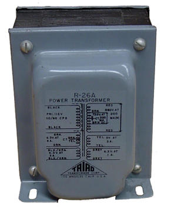
Photograph of multiple-winding transformer with six windings, a primary and five secondaries.
The transformer in Figure above is intended to provide both high and low voltages necessary in an electronic system using vacuum tubes. Low voltage is required to power the filaments of vacuum tubes, while high voltage is required to create the potential difference between the plate and cathode elements of each tube. One transformer with multiple windings suffices elegantly to provide all the necessary voltage levels from a single 115 V source. The wires for this transformer (15 of them!) are not shown in the photograph, being hidden from view.
If electrical isolation between secondary circuits is not of great importance, a similar effect can be obtained by “tapping” a single secondary winding at multiple points along its length, like Figure below.
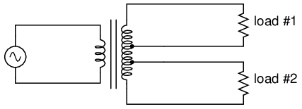
A single tapped secondary provides multiple voltages.
A tap is nothing more than a wire connection made at some point on a winding between the very ends. Not surprisingly, the winding turn/voltage magnitude relationship of a normal transformer holds true for all tapped segments of windings. This fact can be exploited to produce a transformer capable of multiple ratios: (Figure below)
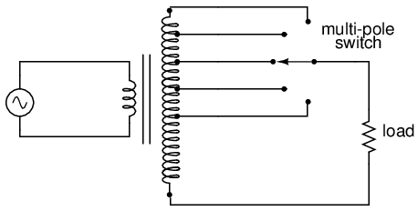
A tapped secondary using a switch to select one of many possible voltages.
Carrying the concept of winding taps further, we end up with a “variable transformer,” where a sliding contact is moved along the length of an exposed secondary winding, able to connect with it at any point along its length. The effect is equivalent to having a winding tap at every turn of the winding, and a switch with poles at every tap position: (Figure below)
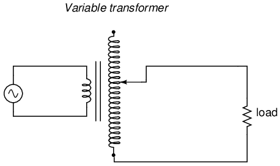
A sliding contact on the secondary continuously varies the secondary voltage.
One consumer application of the variable transformer is in speed controls for model train sets, especially the train sets of the 1950's and 1960's. These transformers were essentially step-down units, the highest voltage obtainable from the secondary winding being substantially less than the primary voltage of 110 to 120 volts AC. The variable-sweep contact provided a simple means of voltage control with little wasted power, much more efficient than control using a variable resistor!
Moving-slide contacts are too impractical to be used in large industrial power transformer designs, but multi-pole switches and winding taps are common for voltage adjustment. Adjustments need to be made periodically in power systems to accommodate changes in loads over months or years in time, and these switching circuits provide a convenient means. Typically, such “tap switches” are not engineered to handle full-load current, but must be actuated only when the transformer has been de-energized (no power).
Seeing as how we can tap any transformer winding to obtain the equivalent of several windings (albeit with loss of electrical isolation between them), it makes sense that it should be possible to forego electrical isolation altogether and build a transformer from a single winding. Indeed this is possible, and the resulting device is called an autotransformer: (Figure below)
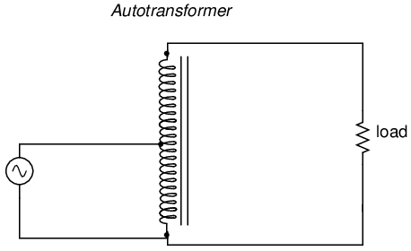
This autotransformer steps voltage up with a single tapped winding, saving copper, sacrificing isolation.
The autotransformer depicted above performs a voltage step-up function. A step-down autotransformer would look something like Figure below.
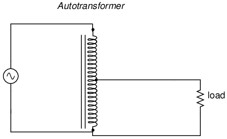
This auto transformer steps voltage down with a single copper-saving tapped winding.
Autotransformers find popular use in applications requiring a slight boost or reduction in voltage to a load. The alternative with a normal (isolated) transformer would be to either have just the right primary/secondary winding ratio made for the job or use a step-down configuration with the secondary winding connected in series-aiding (“boosting”) or series-opposing (“bucking”) fashion. Primary, secondary, and load voltages are given to illustrate how this would work.
First, the “boosting” configuration. In Figure below the secondary coil's polarity is oriented so that its voltage directly adds to the primary voltage.
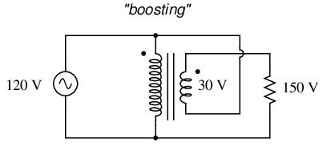
Ordinary transformer wired as an autotransformer to boost the line voltage.
Next, the “bucking” configuration. In Figure below the secondary coil's polarity is oriented so that its voltage directly subtracts from the primary voltage:
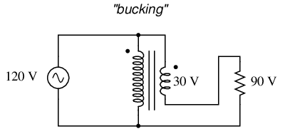
Ordinary transformer wired as an autotransformer to buck the line voltage down.
The prime advantage of an autotransformer is that the same boosting or bucking function is obtained with only a single winding, making it cheaper and lighter to manufacture than a regular (isolating) transformer having both primary and secondary windings.
Like regular transformers, autotransformer windings can be tapped to provide variations in ratio. Additionally, they can be made continuously variable with a sliding contact to tap the winding at any point along its length. The latter configuration is popular enough to have earned itself its own name: the Variac. (Figure below)
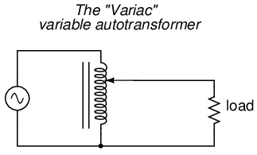
A variac is an autotransformer with a sliding tap.
Small variacs for benchtop use are popular pieces of equipment for the electronics experimenter, being able to step household AC voltage down (or sometimes up as well) with a wide, fine range of control by a simple twist of a knob.
As we saw in a few SPICE analyses earlier in this chapter, the output voltage of a transformer varies some with varying load resistances, even with a constant voltage input. The degree of variance is affected by the primary and secondary winding inductances, among other factors, not the least of which includes winding resistance and the degree of mutual inductance (magnetic coupling) between the primary and secondary windings. For power transformer applications, where the transformer is seen by the load (ideally) as a constant source of voltage, it is good to have the secondary voltage vary as little as possible for wide variances in load current.
The measure of how well a power transformer maintains constant secondary voltage over a range of load currents is called the transformer's voltage regulation. It can be calculated from the following formula:
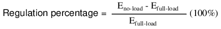
“Full-load” means the point at which the transformer is operating at maximum permissible secondary current. This operating point will be determined primarily by the winding wire size (ampacity) and the method of transformer cooling. Taking our first SPICE transformer simulation as an example, let's compare the output voltage with a 1 kΩ load versus a 200 Ω load (assuming that the 200 Ω load will be our “full load” condition). Recall if you will that our constant primary voltage was 10.00 volts AC:
freq v(3,5) i(vi1) 6.000E+01 9.962E+00 9.962E-03 Output with 1k ohm load freq v(3,5) i(vi1) 6.000E+01 9.348E+00 4.674E-02 Output with 200 ohm load
Notice how the output voltage decreases as the load gets heavier (more current). Now let's take that same transformer circuit and place a load resistance of extremely high magnitude across the secondary winding to simulate a “no-load” condition: (See "transformer" spice list")
transformer v1 1 0 ac 10 sin rbogus1 1 2 1e-12 rbogus2 5 0 9e12 l1 2 0 100 l2 3 5 100 k l1 l2 0.999 vi1 3 4 ac 0 rload 4 5 9e12 .ac lin 1 60 60 .print ac v(2,0) i(v1) .print ac v(3,5) i(vi1) .end
freq v(2) i(v1) 6.000E+01 1.000E+01 2.653E-04 freq v(3,5) i(vi1) 6.000E+01 9.990E+00 1.110E-12 Output with (almost) no load
So, we see that our output (secondary) voltage spans a range of 9.990 volts at (virtually) no load and 9.348 volts at the point we decided to call “full load.” Calculating voltage regulation with these figures, we get:
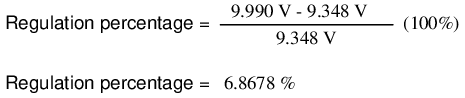
Incidentally, this would be considered rather poor (or “loose”) regulation for a power transformer. Powering a simple resistive load like this, a good power transformer should exhibit a regulation percentage of less than 3%. Inductive loads tend to create a condition of worse voltage regulation, so this analysis with purely resistive loads was a “best-case” condition.
There are some applications, however, where poor regulation is actually desired. One such case is in discharge lighting, where a step-up transformer is required to initially generate a high voltage (necessary to “ignite” the lamps), then the voltage is expected to drop off once the lamp begins to draw current. This is because discharge lamps' voltage requirements tend to be much lower after a current has been established through the arc path. In this case, a step-up transformer with poor voltage regulation suffices nicely for the task of conditioning power to the lamp.
Another application is in current control for AC arc welders, which are nothing more than step-down transformers supplying low-voltage, high-current power for the welding process. A high voltage is desired to assist in “striking” the arc (getting it started), but like the discharge lamp, an arc doesn't require as much voltage to sustain itself once the air has been heated to the point of ionization. Thus, a decrease of secondary voltage under high load current would be a good thing. Some arc welder designs provide arc current adjustment by means of a movable iron core in the transformer, cranked in or out of the winding assembly by the operator. Moving the iron slug away from the windings reduces the strength of magnetic coupling between the windings, which diminishes no-load secondary voltage and makes for poorer voltage regulation.
No exposition on transformer regulation could be called complete without mention of an unusual device called a ferroresonant transformer. “Ferroresonance” is a phenomenon associated with the behavior of iron cores while operating near a point of magnetic saturation (where the core is so strongly magnetized that further increases in winding current results in little or no increase in magnetic flux).
While being somewhat difficult to describe without going deep into electromagnetic theory, the ferroresonant transformer is a power transformer engineered to operate in a condition of persistent core saturation. That is, its iron core is “stuffed full” of magnetic lines of flux for a large portion of the AC cycle so that variations in supply voltage (primary winding current) have little effect on the core's magnetic flux density, which means the secondary winding outputs a nearly constant voltage despite significant variations in supply (primary winding) voltage. Normally, core saturation in a transformer results in distortion of the sinewave shape, and the ferroresonant transformer is no exception. To combat this side effect, ferroresonant transformers have an auxiliary secondary winding paralleled with one or more capacitors, forming a resonant circuit tuned to the power supply frequency. This “tank circuit” serves as a filter to reject harmonics created by the core saturation, and provides the added benefit of storing energy in the form of AC oscillations, which is available for sustaining output winding voltage for brief periods of input voltage loss (milliseconds' worth of time, but certainly better than nothing). (Figure below)
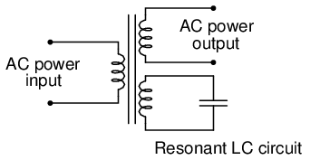
Ferroresonant transformer provides voltage regulation of the output.
In addition to blocking harmonics created by the saturated core, this resonant circuit also “filters out” harmonic frequencies generated by nonlinear (switching) loads in the secondary winding circuit and any harmonics present in the source voltage, providing “clean” power to the load.
Ferroresonant transformers offer several features useful in AC power conditioning: constant output voltage given substantial variations in input voltage, harmonic filtering between the power source and the load, and the ability to “ride through” brief losses in power by keeping a reserve of energy in its resonant tank circuit. These transformers are also highly tolerant of excessive loading and transient (momentary) voltage surges. They are so tolerant, in fact, that some may be briefly paralleled with unsynchronized AC power sources, allowing a load to be switched from one source of power to another in a “make-before-break” fashion with no interruption of power on the secondary side!
Unfortunately, these devices have equally noteworthy disadvantages: they waste a lot of energy (due to hysteresis losses in the saturated core), generating significant heat in the process, and are intolerant of frequency variations, which means they don't work very well when powered by small engine-driven generators having poor speed regulation. Voltages produced in the resonant winding/capacitor circuit tend to be very high, necessitating expensive capacitors and presenting the service technician with very dangerous working voltages. Some applications, though, may prioritize the ferroresonant transformer's advantages over its disadvantages. Semiconductor circuits exist to “condition” AC power as an alternative to ferroresonant devices, but none can compete with this transformer in terms of sheer simplicity.